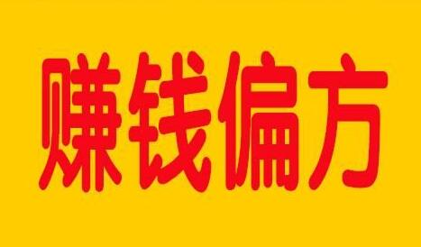

很多农村的地区都有集市，而赶集是农村的传统，每到那一天人们都会到集市购买东西，人非常的多，这就存在很多商机，比如卖小吃。那么农村集市卖什么小吃挣钱?这几种可以考虑一下。

1、油炸小吃
农村集市上的油炸小吃非常受欢迎，其中脆皮炸香蕉真的是相当的美味，只要吃一次，就一定会爱上的，一个只卖两块钱，但这样的小吃在农村的集市上受到广大农村人的追捧，一天最少卖三百块钱，生意好的时候，甚至可以上千，真的是暴利的小生意。
2、烤鸡腿
农村集市上卖的鸡腿特别便宜，最多5块钱一个，因为卖的便宜，所以鸡腿卖的也很快。除了烤鸡腿外，现烤的大薯片也是很受欢迎的，有的人其它的都不卖，就卖大薯片，每天都能赚不少钱。这一类薯片不但小孩子爱吃，大人也爱吃。
3、冰糖葫芦
冰糖葫芦价格不高，但是很受欢迎，一般市场上冰糖葫芦都是卖2-5元一串，但是卖冰糖葫芦的最好是去小孩子多的地方，小孩子一多，这类东西就卖的好，农村很多人都会带小孩赶集，因此生意也是蛮好的。
4、炸麻花
说起炸麻花，这种小吃在农村已经消失许久了，现在人们吃麻花都得到商店去买成品，许多人越来越怀念农村人做的地道炸麻花了，所以现在有许多人都开始抓住这个商机，开始在自家做麻花吃，并且还会拿到集市上去卖，据说一个月少说也会上万块。
5、麻辣烫
在全国各地，麻辣烫都是很受欢迎的小吃，不仅有荤有素，吃起来也别有一番滋味。不仅如此，麻辣烫的食材很便宜，做出来的成品却很昂贵。一串小小的青菜，就要卖到两块钱，因此利润是很高的。
6、其它小吃
除了以上介绍的小吃外，还有煎饼果子、铁板鱿鱼、烤鹌鹑蛋、手抓饼、烤面筋、凉拌菜等小吃非常受欢迎，都是农村集市上不错的小吃生意，做得好日利润上千都有可能。
以上就是关于农村集市卖小吃介绍了，其实农村集市存在很大的商机，因为人流量大，再加上人们都基本是在集市上解决午餐，或者有时候有些人还会去吃宵夜，因此以上这些小吃都是非常不错的。